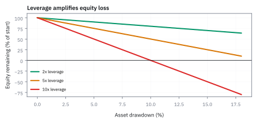
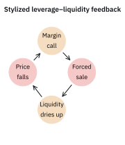
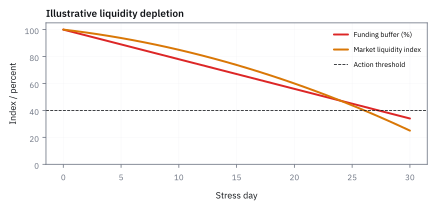
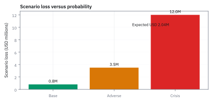

24.2 Bubbles, Crises, and Regulation
เงินกู้ทำให้ราคาที่ลงนิดเดียวกลายเป็นการขายบังคับครั้งใหญ่ และเมื่อทุกคนขายพร้อมกัน ความเสี่ยงไม่ได้มาจากโชคร้าย แต่มาจากโครงสร้าง
กองทุนถือสินเชื่อบ้านมัดรวม (mortgage pool) มูลค่า \$10 ล้าน ใช้เงินตัวเอง \$1 ล้าน กู้ \$9 ล้าน เจ้าหนี้กำหนดว่าเงินตัวเองต้องไม่ต่ำกว่า 5% ของมูลค่าสินทรัพย์ (maintenance margin) วันหนึ่งราคาลง 8% ผู้จัดการบอกว่า “ลงแค่ 8% เกณฑ์ตั้ง 5% ยังไม่ต้องทำอะไร” ถูกไหม และถ้าไม่มีเงินเติม ต้องขายเท่าไร?
ลองตอบก่อนเปิดเฉลย
ผิด สินทรัพย์เหลือ \$9.2 ล้าน หนี้ยังเป็น \$9 ล้าน เงินตัวเองเหลือ \$200,000 หรือ 2.17% ของสินทรัพย์ ต่ำกว่าเกณฑ์แล้ว ขาดหลักประกัน \$260,000 ถ้าไม่มีเงินเติมต้องขายสินทรัพย์ \$5.2 ล้าน หรือ 56.5% ของพอร์ต ขาดทุน 8% ของสินทรัพย์คือ 80% ของเงินตัวเอง และถ้าหลายกองทุนขายพร้อมกัน ราคาจะลงต่อ
สิ่งที่เราจะสร้าง
24.1 แสดงว่าดีลเดียวที่ใช้หลักประกันอาจถูกบังคับปิดก่อนความคิดจะถูก หน้านี้ขยายเรื่องนั้นเป็นทั้งระบบ ฟองสบู่คือช่วงที่ราคาสูงกว่าที่เงินสดในอนาคตอธิบายได้ ส่วนวิกฤตคือช่วงที่เงินกู้ซึ่งค้ำด้วยราคาเหล่านั้นถูกเรียกคืนพร้อมกัน
เราจะหาว่าเงินกู้คูณผลตอบแทนอย่างไร ราคาต้องลงแค่ไหนจึงโดนเรียกหลักประกัน คิดกองทุนในโจทย์ทีละขั้นจนถึงการขายบังคับ ดูว่าส่วนลดหลักประกัน (haircut) คุมอัตราทดของทั้งตลาดอย่างไร แยกสภาพคล่องสองแบบ เทียบขาดทุนเฉลี่ยกับขาดทุนในวิกฤต แล้วถามว่าเหตุการณ์ “25 sigma” บอกอะไร และกฎหลังปี 2008 ตัดวงจรนี้ตรงไหน
ศัพท์ที่ใช้ในหัวข้อนี้
- Leverage (อัตราทด)
- มูลค่าสินทรัพย์หารด้วยเงินตัวเอง ใช้บอกว่ากำไรและขาดทุนของสินทรัพย์ถูกขยายกี่เท่าเมื่อถึงมือเจ้าของ
- Margin และ margin call
- Margin คือสัดส่วนเงินตัวเองขั้นต่ำที่เจ้าหนี้กำหนด margin call คือการเรียกเงินเพิ่มเมื่อสัดส่วนต่ำกว่าเกณฑ์ ถ้าไม่มีเงินเติมต้องขายสินทรัพย์ไปคืนหนี้
- Haircut
- ส่วนลดที่ผู้ให้กู้หักจากมูลค่าหลักประกันก่อนให้กู้ เช่น haircut 25% แปลว่ากู้ได้ 75% ของมูลค่า ตัวเลขนี้กำหนดอัตราทดสูงสุด
- Fire sale
- การขายเร่งด่วนเพื่อหาเงินสด จนต้องยอมราคาต่ำกว่าปกติ เมื่อหลายรายขายพร้อมกัน ราคาที่ลงก็ทำให้รายอื่นโดนเรียกหลักประกันต่อ
- Funding liquidity และ market liquidity
- Funding liquidity คือความสามารถหาเงินสดหรือกู้ต่อ market liquidity คือความสามารถขายของได้เร็วโดยราคาไม่ทรุด สองอย่างนี้หายพร้อมกันในวิกฤต
- Stress test
- การคิดขาดทุนภายใต้สถานการณ์เลวร้ายที่กำหนดไว้ล่วงหน้า ใช้ถามว่าจะรอดไหม ไม่ใช่ถามว่าโดยเฉลี่ยเสียเท่าไร
สัญลักษณ์และหน่วย
| สัญลักษณ์ | ความหมาย | หน่วย |
|---|---|---|
| $A,\ L,\ E$ | มูลค่าสินทรัพย์ หนี้ และเงินตัวเอง ($A=L+E$) | \$ |
| $\ell$ | อัตราทด $A/E$ | เท่า |
| $R_A,\ r_L,\ R_E$ | ผลตอบแทนของสินทรัพย์ ดอกเบี้ยเงินกู้ และผลตอบแทนของเงินตัวเอง | สัดส่วนต่อช่วง |
| $m,\ h$ | maintenance margin และ haircut | สัดส่วน |
| $x$ | มูลค่าสินทรัพย์ที่ต้องขายเพื่อคืนหนี้ | \$ |
| $D,\ \mathrm{PD},\ \mathrm{LGD},\ \mathrm{EAD}$ | ตัวบอกการผิดนัด (0 หรือ 1) โอกาสผิดนัด สัดส่วนที่เสียเมื่อผิดนัด และยอดที่เสี่ยง | ไม่มีหน่วย, สัดส่วน, สัดส่วน, \$ |
ขั้นที่ 1 — เงินกู้คูณผลตอบแทนทั้งสองทิศ
ก่อนดูกองทุนในโจทย์ ต้องรู้ว่าเงินกู้ทำอะไรกับผลตอบแทนของเจ้าของ สินทรัพย์ทั้งก้อนทำผลตอบแทน $R_A$ แต่เจ้าของต้องจ่ายดอกเบี้ย $r_L$ ให้ส่วนที่กู้ หารด้วยเงินตัวเองแล้วเขียนทุกอย่างด้วยอัตราทด
บรรทัดที่สองมาจาก $A=L+E$ ตรง ๆ บรรทัดที่สามจึงบอกว่าผลตอบแทนของเจ้าของคือผลตอบแทนสินทรัพย์คูณอัตราทด ลบต้นทุนเงินกู้ของส่วนที่กู้ ตัวคูณเดียวกันทำงานทั้งสองทิศ สินทรัพย์ +5% กลายเป็น +14% แต่ −5% กลายเป็น −26% และดอกเบี้ยทำให้ฝั่งขาดทุนหนักกว่าฝั่งกำไรเสมอ
ขั้นที่ 2 — ราคาต้องลงแค่ไหนจึงโดนเรียกหลักประกัน
สัญชาตญาณบอกว่าเริ่มที่เงินตัวเอง 10% เกณฑ์ 5% ราคาต้องลง 5% จึงถึงเกณฑ์ ขั้นนี้แสดงว่าผิด เพราะหนี้ไม่ลดตามราคา ขาดทุนทั้งหมดจึงตกที่เงินตัวเอง ให้ $\ell_0$ คืออัตราทดวันแรก
บรรทัดแรกได้จาก $A_t=A_0(1+R_A)$ และ $E_t=A_t-L$ โดย $L=A_0(1-1/\ell_0)$ คงที่ เศษ (เงินตัวเอง) ลดเต็มจำนวนของขาดทุน ส่วนตัวหาร (สินทรัพย์) ลดแค่ตามสัดส่วน อัตราส่วนจึงรูดเร็วกว่าราคา คูณตัวหารขึ้นแล้วย้ายข้างได้เกณฑ์ ราคาลงแค่ 5.26% ก็ถึงเกณฑ์ ไม่ใช่ 5% และกองทุนในโจทย์ลงไป 8%
Figure 24.2a — อัตราทดขยายการหายของเงินตัวเอง

แกนนอนคือการลงของสินทรัพย์ 0 ถึง 18% แกนตั้งคือเงินตัวเองที่เหลือเป็นเปอร์เซ็นต์ของวันแรก $100(1-\ell d)$ เมื่อหนี้คงที่ เส้นเขียว ส้ม แดง คืออัตราทด 2, 5 และ 10 เท่า ตัดศูนย์ที่สินทรัพย์ลง 50%, 20% และ 10% ตามลำดับ (สองเส้นแรกยังไม่ถึงศูนย์ในช่วงของรูป) เส้นเหล่านี้ไม่ใช่โอกาสผิดนัด เป็นแค่บัญชี
ขั้นที่ 3 — กองทุนในโจทย์: ขาดหลักประกันเท่าไร
โจทย์ให้อะไรมาบ้าง: $A_0=\$10$ ล้าน $L=\$9$ ล้าน ($\ell_0=10$) ราคาลง 8% และ $m=5\%$
คำตอบ: เงินตัวเองเหลือ \$200,000 ต้องมี \$460,000 จึงขาด \$260,000 สินทรัพย์ลง 8% แต่เงินตัวเองหายไป 80%
ตรวจเองใน 10 วินาที: ขาดทุน $0.08\times10{,}000{,}000=800{,}000$ ตกที่เงินตัวเองทั้งหมด $1{,}000{,}000-800{,}000=200{,}000$ และ $200{,}000/9{,}200{,}000=2.17\%$ ต่ำกว่า 5%
ขั้นที่ 4 — ไม่มีเงินเติม: ต้องขายเท่าไร
ถ้ามีเงินสด \$260,000 ก็จบ ถ้าไม่มี ต้องขายสินทรัพย์ $x$ แล้วเอาเงินทั้งหมดไปคืนหนี้ การขายไม่ได้เพิ่มเงินตัวเอง เพราะสินทรัพย์กับหนี้ลดเท่ากัน สิ่งที่เปลี่ยนคือตัวหาร ต้องขายจนเงินตัวเองกลับมาเป็น 5% ของสินทรัพย์ที่เหลือ
เงินที่ขาดทุกดอลลาร์ต้องขายสินทรัพย์ $1/m=20$ ดอลลาร์ ขาดหลักประกัน \$260,000 จึงต้องขาย \$5.2 ล้าน หรือ 56.5% ของพอร์ตที่เหลือ ตรวจ: $200{,}000/4{,}000{,}000=5\%$ พอดี
ถ้ากองทุนหลายแห่งถือของคล้ายกันและขายพร้อมกัน ราคาจะลงต่อ ทำให้กองทุนที่ยังไม่โดนเรียกกลายเป็นโดนเรียก นี่คือ fire sale และเป็นเหตุที่การขาดทุนเล็ก ๆ ของสินทรัพย์กลายเป็นวิกฤตได้
ขั้นที่ 5 — haircut คุมอัตราทดของทั้งตลาด
ในตลาดกู้ยืมโดยใช้หลักทรัพย์ค้ำ (repo) ผู้ให้กู้ไม่ได้บอกอัตราทดตรง ๆ แต่บอก haircut $h$ ซึ่งก็คุมอัตราทดสูงสุดอยู่ดี
เงินตัวเองคือส่วนที่กู้ไม่ได้พอดี มูลค่าสินทรัพย์ตัดกันหมด เหลืออัตราทดสูงสุดเท่ากับส่วนกลับของ haircut กองทุนที่ใช้อัตราทดเต็มที่ 4 เท่า ถ้าผู้ให้กู้ขึ้น haircut เป็น 40% ต้องลดสินทรัพย์เหลือ 2.5 เท่าของเงินตัวเอง คือขาย 37.5% ของพอร์ตทันที ทั้งที่ราคายังไม่ได้ลงเลย
ผู้ให้กู้มักขึ้น haircut ตอนตลาดแย่ซึ่งเป็นตอนที่ทุกคนต้องการเงินที่สุด Brunnermeier และ Pedersen (2009) ใช้กลไกนี้อธิบายว่าสภาพคล่องหายเป็นเกลียว (liquidity spiral)
Figure 24.2b — วงจรของเงินกู้และสภาพคล่อง

แผนผังสอน ไม่มีข้อมูล สี่วงต่อกันเป็นวง: ราคาลง (Price falls) → เรียกหลักประกัน (Margin call) → ขายบังคับ (Forced sale) → สภาพคล่องแห้ง (Liquidity dries up) → ราคาลงต่อ ขั้นที่ 3 และ 4 คือสองลูกศรแรก ขั้นที่ 5 คือเหตุที่ลูกศรหมุนเร็วขึ้นเมื่อ haircut ขยับ
ขั้นที่ 6 — สภาพคล่องสองแบบ หมดไม่พร้อมกัน
desk อาจมั่นใจว่าสินทรัพย์จะฟื้นใน 30 วัน แต่ถ้าผู้ให้กู้เรียกเงินวันนี้ ก็ต้องขายวันนี้ ความเสี่ยงจึงอยู่ที่เส้นทาง ไม่ใช่ราคาปลายทาง Figure 24.2c ใช้ตัวเลขสมมติสองเส้น: เงินสดสำรอง $f(t)=100-2.2t$ ลดจาก margin call และดัชนีสภาพคล่องตลาด $g(t)=100-t-0.05t^2$ ลดเร็วขึ้นเรื่อย ๆ โดยมีเกณฑ์ลงมือที่ 40
ตลาดเริ่มขายยากกว่าเกณฑ์ในวันที่ 26.1 ก่อนเงินสดหมดในวันที่ 27.3 สองเส้นตัดกันวันที่ 24 ที่ระดับ 47.2 หลังจากนั้นสภาพคล่องตลาดแย่กว่าเงินสดสำรอง บทเรียนคือ ถ้ารอจนเงินสดใกล้หมดค่อยขาย จะได้ขายในวันที่ตลาดรับของได้แย่ที่สุด เกณฑ์ลงมือต้องดูทั้งสองเส้น
Figure 24.2c — เงินสดสำรองกับสภาพคล่องตลาดในวันที่ตึงเครียด

ตัวเลขสมมติเพื่อสอน แกนนอนคือวันที่ 0 ถึง 30 ของช่วงตึงเครียด เส้นแดงคือเงินสดสำรอง $100-2.2t$ เส้นส้มคือดัชนีสภาพคล่อง $100-t-0.05t^2$ เส้นประคือเกณฑ์ลงมือ 40 เส้นส้มลงถึงเกณฑ์ก่อน (วันที่ 26.1) ตามขั้นที่ 6
ขั้นที่ 7 — ขาดทุนเฉลี่ยไม่ใช่ขาดทุนในวิกฤต
ธนาคารตั้งสำรองด้วยขาดทุนเฉลี่ย (expected loss) ของสินเชื่อ ขาดทุนคือตัวบอกการผิดนัด $D$ (0 หรือ 1) คูณสัดส่วนที่เสีย คูณยอดที่เสี่ยง สูตรเฉลี่ยแยกเป็นผลคูณได้ก็ต่อเมื่อการผิดนัดกับความรุนแรงเป็นอิสระต่อกัน ซึ่งเป็นสมมติฐาน ไม่ใช่ข้อเท็จจริง
ในเวลาปกติ โอกาสผิดนัด 2% และเสีย 40% ของยอดเมื่อผิดนัด ขาดทุนเฉลี่ย \$80,000 ในวิกฤต ทั้งโอกาสผิดนัดและความรุนแรงขึ้นพร้อมกัน เพราะราคาบ้านที่ค้ำหนี้ก็ลงด้วย ขาดทุนเป็น \$1,050,000 หรือ 13.1 เท่า ความเป็นอิสระที่ใช้แยกผลคูณพังในวันที่สำคัญที่สุด
ตารางสถานการณ์ใน Figure 24.2d ให้ภาพเดียวกัน: ขาดทุน 0.8, 3.5 และ 12.0 ล้าน ด้วยน้ำหนัก 0.70, 0.25 และ 0.05 เฉลี่ยได้ $0.56+0.875+0.60=2.035$ ล้าน แต่ถ้าวิกฤตเกิด ต้องมีทุนรับ 12.0 ล้าน การรายงานแค่ค่าเฉลี่ยจึงซ่อนคำถามว่าจะรอดไหม
Figure 24.2d — ขาดทุนในแต่ละสถานการณ์เทียบกับค่าเฉลี่ย

ตัวเลขสมมติ แท่งคือขาดทุนของสถานการณ์ปกติ ไม่ดี และวิกฤต 0.8, 3.5 และ 12.0 ล้านดอลลาร์ น้ำหนัก 0.70, 0.25 และ 0.05 ป้ายค่าเฉลี่ยในรูปเขียน 2.04M ซึ่งเป็นค่าปัดของ 2.035 ล้านในขั้นที่ 7 แท่งวิกฤตใหญ่เกือบหกเท่าของค่าเฉลี่ย
ขั้นที่ 8 — “25 sigma หลายวันติด” บอกอะไร
เดือนสิงหาคม 2007 กองทุน quant ที่ใช้กลยุทธ์คล้ายกันขาดทุนพร้อมกันหลายวัน CFO ของ Goldman Sachs พูดว่าเห็นการเคลื่อนไหวระดับ 25 standard deviation หลายวันติดต่อกัน ถ้าผลตอบแทนเป็น Normal จริง โอกาสนั้นเท่าไร? ใช้ขอบเขตบนของหาง Normal แล้วคิดเป็นลอการิทึมเพื่อไม่ให้ตัวเลขเล็กเกินเครื่องคิดเลข
ขอบเขตบนได้จากการอินทิเกรตหางของ density ทีละส่วน และแน่นมากเมื่อ $z$ ใหญ่ ค่าจริงคือ $3.057\times10^{-138}$ ต่างจากขอบเขตแค่ 0.16% ถ้านับเวลาตั้งแต่เอกภพเกิดเป็นไมโครวินาทีจะได้ราว $4\times10^{23}$ ครั้ง เหตุการณ์ $10^{-138}$ จึงไม่ควรเกิดแม้ครั้งเดียว ถ้าแต่ละวันอิสระ สองวันติดคือราว $10^{-275}$
บรรทัดสุดท้ายใช้หางหนาแบบ 10.4: t distribution ที่มี 3 degrees of freedom ปรับให้ variance เท่ากับ 1 วัน 25 SD เกิดราววันละ $1.36\times10^{-5}$ คือราวหนึ่งครั้งใน 293 ปีของวันทำการ หายากแต่ไม่ใช่ปาฏิหาริย์
ข้อสรุปจึงไม่ใช่ “โชคร้ายสุดขีด” แต่คือ “แบบจำลองผิด” ทั้งเรื่องหางและเรื่องความเป็นอิสระ เมื่อทุกกองทุนขายของชุดเดียวกัน วันร้ายจึงต่อกัน
กฎหลังปี 2008 ตัดวงจรตรงไหน
| จุดในวงจร | กฎ | ทำอะไร |
|---|---|---|
| ขาดทุนตกที่เงินตัวเอง (ขั้นที่ 1–3) | ทุนขั้นต่ำและ leverage ratio ของ Basel III | บังคับให้ธนาคารมีเงินตัวเองมากขึ้น อัตราทดต่ำลง |
| ต้องขายเมื่อเงินสดหมด (ขั้นที่ 4, 6) | เกณฑ์สภาพคล่อง เช่น LCR ของ Basel III | ต้องถือสินทรัพย์ที่ขายง่ายพอใช้ 30 วันของสถานการณ์ตึงเครียด |
| ไม่รู้ว่าใครเป็นหนี้ใคร | การชำระราคาผ่านศูนย์กลาง (central clearing) และการรายงานธุรกรรมตาม Dodd–Frank | ลดความเสี่ยงคู่สัญญา แต่ย้ายความเสี่ยงไปรวมที่ศูนย์กลางซึ่งต้องเรียก margin |
| ค่าเฉลี่ยซ่อนวิกฤต (ขั้นที่ 7) | stress test ของทางการทุกปี | ถามว่าทุนพอรับสถานการณ์เลวร้ายไหม ไม่ใช่แค่ค่าเฉลี่ย |
คำถามที่ควรถามออกมาดัง ๆ
รู้ได้ไหมว่าตอนนี้เป็นฟองสบู่? สัญญาณที่เกิดซ้ำมีอยู่: เงินกู้โตเร็ว มาตรฐานการปล่อยกู้หย่อน และเรื่องเล่าว่า “ครั้งนี้ไม่เหมือนเดิม” แต่จังหวะแตกบอกไม่ได้ คนที่ short เร็วเกินไปอาจเจ๊งก่อนฟองแตกแบบขั้นที่ 2 ของ 24.1 จึงใช้เตรียมรับมือ ไม่ใช่ใช้พยากรณ์
ทำไมไม่ห้ามใช้เงินกู้ไปเลย? เงินกู้ทำให้ธนาคารปล่อยสินเชื่อและตลาดมีคนรับซื้อของ กฎจึงจำกัดขนาดและบังคับให้มีกันชน แทนการห้าม และเมื่อกฎเข้มขึ้นในที่หนึ่ง กิจกรรมมักย้ายไปอยู่ในที่ที่กำกับน้อยกว่า
ความผิดที่ให้คำตอบผิดแบบเงียบ ๆ
เทียบการลงของราคากับเกณฑ์ตรง ๆ: ราคาลง 5.26% ก็ถึงเกณฑ์ 5% แล้วที่อัตราทด 10 เท่า ลง 8% เงินตัวเองหาย 80%
ลืมว่าการขายไม่เพิ่มเงินตัวเอง: ขาด \$260,000 ไม่ได้แปลว่าขาย \$260,000 แล้วจบ ต้องขาย \$5.2 ล้าน
คูณ PD × LGD โดยถือว่าอิสระ: ในวิกฤตทั้งสองขึ้นพร้อมกัน ขาดทุนเฉลี่ย \$80,000 กลายเป็น \$1,050,000
เรียกเหตุการณ์ในแบบจำลองว่าเป็นไปไม่ได้: $10^{-138}$ ใต้ Normal กลายเป็นหนึ่งครั้งใน 293 ปีใต้หางหนา สิ่งที่ผิดคือแบบจำลอง
ใช้ทำอะไรบนโต๊ะจริง
ฝ่ายความเสี่ยงคำนวณขั้นที่ 2 ถึง 5 ทุกวันสำหรับทุกบัญชีที่ใช้เงินกู้: ราคาลงเท่าไรจึงโดนเรียก ขาดเท่าไร ต้องขายเท่าไร และถ้า haircut ขึ้นจะเกิดอะไร แล้วดูว่าของที่ต้องขายเหมือนกับที่คนอื่นถืออยู่แค่ไหน ถ้าเหมือนกันมาก ราคาที่ใช้คิดควรเป็นราคาขายบังคับ ไม่ใช่ราคาปิดของเมื่อวาน
สามโจทย์ตรวจความเข้าใจ
1. อัตราทด 5 เท่า maintenance margin 5% ราคาต้องลงเท่าไรจึงโดนเรียกหลักประกัน?
เฉลย
$R_A\lt-(0.20-0.05)/0.95=-15.79\%$ อัตราทดครึ่งหนึ่งของ 10 เท่า แต่ทนราคาลงได้ราวสามเท่า (15.79% เทียบ 5.26%) เพราะกันชน $1/\ell_0-m$ เพิ่มจาก 5% เป็น 15%
2. พอร์ต \$20 ล้าน เงินตัวเอง \$2 ล้าน ราคาลง 6% $m=5\%$ ขาดหลักประกันเท่าไร และถ้าไม่มีเงินเติมต้องขายเท่าไร?
เฉลย
สินทรัพย์ $18.8$ ล้าน เงินตัวเอง $18.8-18=0.8$ ล้าน ต้องมี $0.05(18.8)=0.94$ ล้าน ขาด \$140,000 ต้องขาย $140{,}000/0.05=\$2.8$ ล้าน ตรวจ $800{,}000/16{,}000{,}000=5\%$
3. กองทุนมีเงินตัวเอง \$1 ล้าน ใช้อัตราทดเต็มที่ขณะ haircut 20% แล้วผู้ให้กู้ขึ้น haircut เป็น 30% ต้องขายสินทรัพย์เท่าไร?
เฉลย
เดิมถือ $1/0.2=5$ เท่า คือ \$5 ล้าน ตอนนี้ถือได้ $1/0.3=3.33$ เท่า คือ \$3.33 ล้าน ต้องขาย \$1.67 ล้าน หรือหนึ่งในสามของพอร์ต ทั้งที่ราคาไม่ได้ลงเลย
คำนวณซ้ำด้วย JavaScript
โค้ดนี้คิดผลตอบแทนของเจ้าของ จุดที่โดนเรียกหลักประกัน เงินที่ขาดและสินทรัพย์ที่ต้องขาย อัตราทดจาก haircut ขาดทุนเฉลี่ยกับขาดทุนในวิกฤต หางของ Normal แบบลอการิทึม หางของ Student-t และวันที่เส้นสภาพคล่องถึงเกณฑ์ แล้วพิมพ์ตัวเลขหลักออกมาหนึ่งบรรทัด
function num(name, x) {
if (typeof x !== 'number' || !Number.isFinite(x)) throw new TypeError(`${name} must be a finite number`);
return x;
}
function fraction(name, x) {
if (!(num(name, x) > 0 && x < 1)) throw new RangeError(`${name} must be strictly between 0 and 1`);
return x;
}
// Return on equity at leverage l = A/E, asset return rA, borrowing rate rL.
function equityReturn(l, rA, rL) {
if (!(num('l', l) >= 1)) throw new RangeError('leverage must be at least 1');
return l * num('rA', rA) - (l - 1) * num('rL', rL);
}
// Asset return at which equity/assets falls to the maintenance margin m (debt fixed).
function marginTrigger(l, m) {
fraction('m', m);
if (!(1 / l > m)) throw new RangeError('starting equity share must exceed the margin');
return -(1 / l - m) / (1 - m);
}
// After a fall, how much cash is missing, and how much must be sold (proceeds repay debt) if no cash comes in.
function marginCall({assets, debt, fall, m}) {
fraction('m', m);
const A = num('assets', assets) * (1 - num('fall', fall)), E = A - num('debt', debt);
if (E <= 0) throw new RangeError('equity is wiped out: this is default, not a margin call');
const shortfall = Math.max(m * A - E, 0);
return {A, E, shortfall, sell: shortfall / m, soldShare: shortfall / m / A};
}
// log10 of the standard Normal upper tail, via the continued fraction of the Mills ratio (no underflow).
function normalTailLog10(z) {
if (!(num('z', z) > 0)) throw new RangeError('z must be positive');
let f = z;
for (let k = 200; k >= 1; k--) f = z + k / f;
return (Math.log(1 / f) - z * z / 2 - 0.5 * Math.log(2 * Math.PI)) / Math.LN10;
}
// Upper tail of a Student-t with 3 degrees of freedom rescaled to variance 1, at k standard deviations.
function t3Tail(k) {
const x = num('k', k); // T / sqrt(3) has variance 1, so P(X > k) = P(T > k sqrt 3)
return 0.5 - (Math.atan(x) + x / (1 + x * x)) / Math.PI;
}
const pool = marginCall({assets: 10e6, debt: 9e6, fall: 0.08, m: 0.05});
const bound = -0.5 * Math.log10(2 * Math.PI) - Math.log10(25) - 312.5 / Math.LN10;
const exact = normalTailLog10(25);
console.log(JSON.stringify({
up: equityReturn(4, 0.05, 0.02), down: equityReturn(4, -0.05, 0.02),
trigger10: marginTrigger(10, 0.05), trigger5: marginTrigger(5, 0.05),
pool, haircutLeverage: [1 / 0.25, 1 / 0.40], haircutSell: 1 - (1 / 0.40) / (1 / 0.25),
EL: 0.02 * 0.40 * 10e6, crisis: 0.15 * 0.70 * 10e6,
scenarioExpected: 0.70 * 0.8 + 0.25 * 3.5 + 0.05 * 12.0,
boundLog10: bound, exactLog10: exact, exactMantissa: 10 ** (exact + 138), twoDaysLog10: 2 * exact,
t3: t3Tail(25), t3Years: 1 / t3Tail(25) / 252,
liquidityDays: {market: (-1 + Math.sqrt(1 + 0.2 * 60)) / 0.1, funding: 60 / 2.2, cross: 1.2 / 0.05}
}));ที่มาที่ไป
ฟองสบู่เกิดซ้ำมาหลายร้อยปี: ราคาหัวทิวลิปในเนเธอร์แลนด์ทศวรรษ 1630 หุ้นบริษัท South Sea ในลอนดอนปี 1720 ตลาดหุ้นสหรัฐฯ ปี 1929 หุ้นเทคโนโลยีปี 2000 และสินเชื่อบ้านที่นำไปสู่วิกฤตปี 2008 รายละเอียดต่างกัน แต่เงินกู้ที่ค้ำด้วยราคาที่สูงขึ้นเองปรากฏซ้ำ Khandani และ Lo (2007) วิเคราะห์การขาดทุนของกองทุน quant ในเดือนสิงหาคม 2007 ว่าเกิดจากการลดขนาดพร้อมกันของกลยุทธ์ที่คล้ายกัน หลังวิกฤต สหรัฐฯ ออกกฎหมาย Dodd–Frank ในปี 2010 และ Basel III เพิ่มเกณฑ์ทุนและสภาพคล่อง
ข้อจำกัด: วิธีนี้สมมติอะไร และของจริงเป็นอย่างไร
| สมมติอะไร | ของจริง | ผลเวลาใช้งาน |
|---|---|---|
| ขายได้ที่ราคาปัจจุบัน | การขายก้อนใหญ่กดราคาลงเอง | ต้องขายมากกว่า \$5.2 ล้าน เพราะทุกดอลลาร์ที่ราคาลงเพิ่มเงินที่ขาด |
| เกณฑ์ margin และ haircut คงที่ | ผู้ให้กู้ขึ้นเกณฑ์ตอนตลาดแย่ | แรงขายมาพร้อมกันสองทาง ต้องทดสอบกรณี haircut ขึ้นด้วย |
| รู้ว่าอะไรคือฟองสบู่ | รู้ชัดหลังแตกแล้วเท่านั้น | ใช้เตรียมกันชน ไม่ใช้จับจังหวะ |
สิ่งที่ควรตอบได้หลังอ่าน
- อัตราทดคูณผลตอบแทนทั้งสองทิศ: +5% เป็น +14% แต่ −5% เป็น −26% ที่ 4 เท่า
- ที่อัตราทด 10 เท่า ราคาลงแค่ 5.26% ก็ถึงเกณฑ์ 5% เพราะหนี้ไม่ลดตามราคา
- ขาดหลักประกัน \$260,000 โดยไม่มีเงินเติม ต้องขาย \$5.2 ล้าน เพราะทุกดอลลาร์ที่ขาดต้องขาย $1/m$ ดอลลาร์
- haircut คุมอัตราทดสูงสุด $1/h$ และการขึ้น haircut บังคับขายได้โดยราคาไม่ต้องลง
- ขาดทุนเฉลี่ยซ่อนวิกฤต (80,000 เทียบ 1,050,000) และ “25 sigma” คือหลักฐานว่าแบบจำลองผิด ไม่ใช่โชคร้าย
24.3 ดูว่าคำสั่งซื้อขาย การยืมหุ้น และเงินกู้เหล่านี้วิ่งผ่านใครบ้าง: ตลาดหลักทรัพย์ โบรกเกอร์ ผู้ออก ETF ผู้จัดจำหน่ายหุ้นเข้าตลาด และผู้ให้ยืมหุ้น